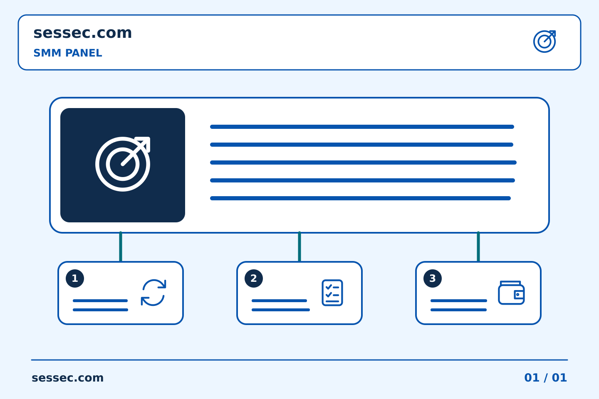
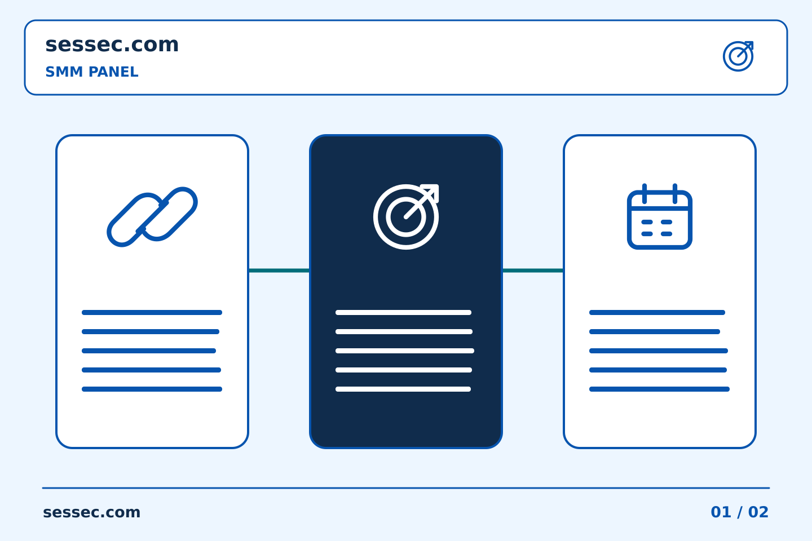
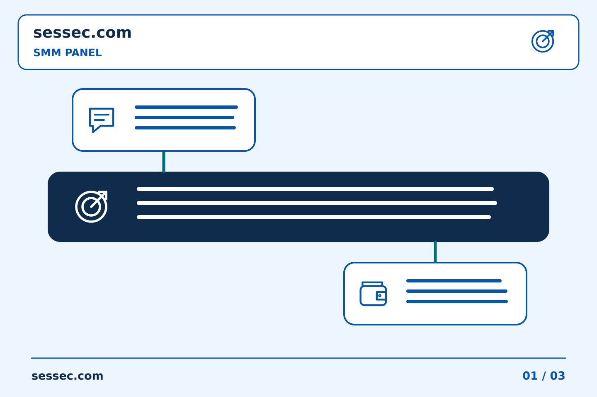

31/10/2026 00:01
រៀបចំការប្រមូតផេកឱ្យច្បាស់លាស់: ការប្រៀបធៀប SMM Panel៖ ការប្រើប្រាស់អព្យាក្រឹត ការពិពណ៌នាមានប្រយោជន៍ | Sessec

កំណត់ត្រាយុទ្ធនាការច្បាស់លាស់ជួយម្ចាស់ផេកសម្រេចថាអ្វីគួរធ្វើម្ដងទៀត និងអ្វីគួរកែប្រែ។ ចាប់ផ្ដើមពីសារ ក្រុមអ្នកទស្សនាគោលដៅ និងការងារជាក់លាក់មួយ។ ប្រសិនបើ SMM Panel ជាផ្នែកមួយនៃផែនការ សូមកត់ត្រាតួនាទីរបស់វា ដោយកុំច្រឡំចំនួនសេវាជាមួយការចាប់អារម្មណ៍ពិតលើអាជីវកម្ម។ រក្សាគោលដៅ លក្ខខណ្ឌសេវា និងការសម្រេចចិត្តចំណាយមុនបញ្ជូនការបញ្ជាទិញ។ បន្ទាប់មកប្រៀបធៀបការបញ្ជូនដែលបានកត់ត្រាជាមួយការសាកសួរពិត និងមតិលើមាតិកា។ មគ្គុទ្ទេសក៍នេះពន្យល់ពីការភ្ជាប់ការជ្រើសរើសសេវា កំណត់ត្រាបញ្ជាទិញ និងសំណួរទៅកាន់ផ្នែកគាំទ្រទៅក្នុងដំណើរការប្រមូត។ កំណត់ត្រាច្បាស់លាស់ក៏ជួយសមាជិកក្រុមផ្សេងយល់ការងារដោយមិនចាំបាច់ស្មាន។ នៅពេលភស្តុតាងមិនគ្រប់គ្រាន់ សូមបញ្ជាក់ភាពមិនច្បាស់នោះ និងសួរសំណួរជាក់លាក់មុនសម្រេចទិញម្ដងទៀត។
មាតិកា
- ផ្ដល់ហេតុផលឱ្យមនុស្សតាមដាន មិនមែនបង្ហាញតែចំនួន
- រៀបចំមាតិកាបន្តបន្ទាប់ ដែលផ្ដល់ហេតុផលឱ្យគេត្រឡប់មកវិញ
- កំណត់តួនាទីរបស់សេវា SMM Panel ឱ្យច្បាស់
- វាស់ការឆ្លើយតបមានប្រយោជន៍ ហើយជ្រើសអ្វីត្រូវកែលម្អបន្ទាប់
- ការប្រៀបធៀប SMM Panel៖ ការប្រើប្រាស់អព្យាក្រឹត ការពិពណ៌នាមានប្រយោជន៍
- ចំណាំការប្រៀបធៀប SMM Panel៖ ហេតុអ្វីបានជាកាលបរិច្ឆេទពិនិត្យមានសារៈសំខាន់
- ការធ្វើផែនការ SMM Panel៖ ពិនិត្យមើលថាតើការកែសម្រួលមាតិកាផ្លាស់ប្តូរកិច្ចការ
- អ្វីដែលការបញ្ជាទិញ SMM Panel តូចអាច និងមិនអាចប្រាប់អ្នកបាន។
- វគ្គការងារ SMM Panel៖ ពិនិត្យមើលកិច្ចការដែលបើកចំហរ មុនពេលចាប់ផ្តើមកិច្ចការថ្មី។
- ការឌិកូដអក្សរកាត់មុនពេលទិញ SMM Panel
- SMM Panel សង្ខេប៖ បំបែកគោលដៅទីផ្សារពីការបញ្ជាក់ការបញ្ជាទិញ
- ការជ្រើសរើស SMM Panel៖ ការដកជម្រើសដែលមិនសមស្របចេញជាមុនសិន
- ដំណើរការក្រុម SMM Panel៖ កំណត់អត្ថន័យនៃស្លាកដែលបានធ្វើនៅខាងក្នុង
- លក្ខខណ្ឌ SMM Panel៖ កត់សម្គាល់ករណីលើកលែង ក៏ដូចជាការពិពណ៌នាចម្បង
- គំរូកិច្ចការ SMM Panel៖ ជ្រើសរើសវាលដែលសំខាន់
- ការស្រាវជ្រាវ SMM Panel៖ ដោះស្រាយលក្ខខណ្ឌដែលអ្នករកមិនឃើញ
- កូដយុទ្ធនាការ SMM Panel៖ ការភ្ជាប់គម្រោងទៅនឹងការទិញជាក់លាក់មួយ។
- បញ្ជីសម្រាំងជាក់ស្តែងសម្រាប់ការប្រៀបធៀបសេវាកម្ម SMM Panel
- ការធ្វើផែនការ SMM Panel៖ បង្រួមសំណើយ៉ាងទូលំទូលាយទៅក្នុងការទិញមួយ។
- សំណួរដែលគេសួរញឹកញាប់
ផ្ដល់ហេតុផលឱ្យមនុស្សតាមដាន មិនមែនបង្ហាញតែចំនួន
ចាប់ផ្ដើមដោយសរសេរមួយប្រយោគថាផេកជួយអ្នកណា និងដោះស្រាយបញ្ហាអ្វី។ អ្នកចូលមើលគួរមើលឃើញគោលបំណងនេះក្នុងការណែនាំផេក និងប្រកាសសំខាន់។ បង្ហាញព័ត៌មានមានប្រយោជន៍មុនសុំឱ្យគេចុចតាមដាន ដូចជាការបង្ហាញរបៀបប្រើផលិតផល ចម្លើយចំពោះសំណួរញឹកញាប់ ឬការប្រៀបធៀបច្បាស់លាស់។ ដាក់ព័ត៌មានទំនាក់ទំនង និងជំហានបន្ទាប់ឱ្យងាយរក។ ចំនួនដែលបង្ហាញធំជាងមុនមិនអាចជំនួសការរៀបចំនេះបានទេ ហើយមិនគួរយកវាមកអះអាងថាអតិថិជនពេញចិត្ត ឬណែនាំម៉ាកដោយឯករាជ្យនោះដែរ។
រៀបចំមាតិកាបន្តបន្ទាប់ ដែលផ្ដល់ហេតុផលឱ្យគេត្រឡប់មកវិញ
ចាត់ទុកការប្រមូតជាការចាប់ផ្ដើមនៃមាតិកាបន្ត មិនមែនជាចំណុចបញ្ចប់របស់ប្រកាសមួយទេ។ ឧទាហរណ៍ អ្នកអាចរៀបចំប្រកាសពន្យល់បញ្ហា វីដេអូបង្ហាញវិធីដោះស្រាយ និងប្រកាសបន្ទាប់ឆ្លើយសំណួរពិត។ នេះគ្រាន់តែជាគំរូផែនការ មិនមែនជារូបមន្តធានាកំណើនទេ។ ឱ្យចំណងជើងត្រូវនឹងអ្វីដែលមាតិកាបង្ហាញ និងស្នើសកម្មភាពពាក់ព័ន្ធតែមួយជាមុន។ ពិនិត្យថាអ្នកមិនស្គាល់អាជីវកម្មក៏អាចយល់សារបានឬអត់។ កំណត់ល្បឿនបង្ហោះដែលក្រុមការងារអាចធ្វើបាន ព្រមទាំងនៅមានពេលឆ្លើយសំណួរអតិថិជន។
កំណត់តួនាទីរបស់សេវា SMM Panel ឱ្យច្បាស់
ពិនិត្យបញ្ជីសេវាបច្ចុប្បន្ន មុនសន្មតថាវេបសាយមានសេវាសម្រាប់វេទិកា ក្រុមអ្នកទស្សនា ឬលទ្ធផលជាក់លាក់។ អានប្រភេទតំណដែលទទួល ការពិពណ៌នាសេវា កម្រិតបរិមាណ និងចំណាយសរុប។ បើសេវាពាក់ព័ន្ធនឹងការទិញការចូលរួម កុំហៅចំនួនដែលសេវាបញ្ជូនថាជាចំណាប់អារម្មណ៍ធម្មជាតិ ឬតម្រូវការអតិថិជនដែលបានផ្ទៀងផ្ទាត់។ ពិនិត្យច្បាប់របស់វេទិកា និងជ្រើសវិធីប្រមូតដែលស្របលក្ខខណ្ឌ។ ទុកថវិកាសម្រាប់ផលិតមាតិកា និងថែទាំអតិថិជនដាច់ដោយឡែក។ អត្រាថោកមិនមានន័យថាការប្រមូតមានប្រយោជន៍ជាងឡើយ ហើយការទិញបន្ថែមមិនអាចជំនួសការកែលម្អប្រកាសដែលមិនច្បាស់បានទេ។
វាស់ការឆ្លើយតបមានប្រយោជន៍ ហើយជ្រើសអ្វីត្រូវកែលម្អបន្ទាប់
កត់ស្ថានភាពមុនចាប់ផ្ដើម និងកំណត់រយៈពេលត្រួតពិនិត្យជាមុន។ ពិនិត្យព័ត៌មានអ្នកទស្សនាដែលមាន សំណួរស្ម័គ្រចិត្ត ការសាកសួរ និងកំណត់ត្រាអាជីវកម្មដាច់ដោយឡែក មិនមែនបញ្ចូលទាំងអស់ជាការអះអាងជោគជ័យតែមួយទេ។ ប្រៀបធៀបមាតិកាដែលមានលក្ខណៈស្រដៀង និងកត់ការផ្លាស់ប្ដូរផ្សេង ដូចជាពាណិជ្ជកម្ម ការផ្ដល់ជូន ឬភាពញឹកញាប់នៃការបង្ហោះ។ ភាពខុសគ្នាក្រោយប្រមូតមិនបញ្ជាក់មូលហេតុដោយខ្លួនឯងទេ។ បើភស្តុតាងនៅមានកម្រិត ត្រូវនិយាយតាមការពិត។ ប្រើការពិនិត្យនេះដើម្បីកែលម្អប្រកាសបន្ទាប់មួយចំណុច ជំនួសឱ្យការបង្កើនការទិញដោយស្វ័យប្រវត្តិ។
ការប្រៀបធៀប SMM Panel៖ ការប្រើប្រាស់អព្យាក្រឹត ការពិពណ៌នាមានប្រយោជន៍
ពិពណ៌នាអំពីរបៀបដែលការចុះបញ្ជីត្រូវគ្នានឹងកិច្ចការ ជំនួសឱ្យការពឹងផ្អែកលើស្លាកដូចជាល្អបំផុត ឬល្អឥតខ្ចោះ។ ចំណាំទម្រង់គោលដៅដែលត្រូវការ បរិមាណអនុញ្ញាត និងលក្ខខណ្ឌពាក់ព័ន្ធ។ ការប្រៀបធៀបដ៏មានសារៈប្រយោជន៍អាចពន្យល់ពីជម្រើសមួយដោយមិនអះអាងថាសេវាកម្មមួយគឺល្អជាងសម្រាប់រាល់អតិថិជន ឬយុទ្ធនាការនាពេលអនាគត។
រក្សាលក្ខខណ្ឌដែលមិនមានចម្លើយណាមួយដែលអាចមើលឃើញនៅក្នុងបញ្ជីសម្រាំង។ ប្រសិនបើការដោះដូរមានបញ្ហា ចូរកត់ត្រាថាអ្នកណាទទួលយកវា ហើយហេតុអ្វី។ ពាក្យអព្យាក្រឹតធ្វើឱ្យការសម្រេចចិត្តកាន់តែងាយស្រួលក្នុងការពិនិត្យមើលឡើងវិញនៅពេលដែលតម្រូវការផ្លាស់ប្តូរ និងការពារភាពរីករាយខាងក្នុងពីការក្លាយជាការសន្យាដែលមិនគាំទ្រនៅក្នុងការអាប់ដេតអតិថិជន។
ចំណាំការប្រៀបធៀប SMM Panel៖ ហេតុអ្វីបានជាកាលបរិច្ឆេទពិនិត្យមានសារៈសំខាន់
រក្សាកាលបរិច្ឆេទពិនិត្យឡើងវិញនៅក្បែរឯកសារយោងសេវាកម្ម លក្ខខណ្ឌដែលបានចែង និងការគិតថ្លៃប៉ាន់ស្មាន។ កំណត់ចំណាំដោយគ្មានកាលបរិច្ឆេទអាចមើលទៅដូចជាការណែនាំបច្ចុប្បន្នជាយូរបន្ទាប់ពីកិច្ចការដើមបានបញ្ចប់។ ប្រើការប្រៀបធៀបដែលបានរក្សាទុកដើម្បីយល់ពីហេតុផលពីអតីតកាល បន្ទាប់មកពិនិត្យមើលការចុះបញ្ជីបច្ចុប្បន្ន មុនពេលរៀបចំការទិញផ្សេងទៀត។
កំណត់អត្តសញ្ញាណការផ្លាស់ប្តូរដែលប៉ះពាល់ដល់គោលដៅដែលបានគ្រោងទុក បរិមាណ ឬប្រាក់ឧបត្ថម្ភ។ ធ្វើបច្ចុប្បន្នភាពកំណត់ត្រាការសម្រេចចិត្តជាមួយនឹងព័ត៌មានបច្ចុប្បន្ន ជាជាងការកែសម្រួលកំណត់ត្រាទិញចាស់ដោយស្ងៀមស្ងាត់។ នេះធ្វើឱ្យវាអាចពន្យល់បានទាំងការជ្រើសរើសមុន និងជម្រើសថ្មីដោយមិនធ្វើពុតថាគ្រប់លក្ខខណ្ឌនៃសេវាកម្មនៅដដែល។
ការធ្វើផែនការ SMM Panel៖ ពិនិត្យមើលថាតើការកែសម្រួលមាតិកាផ្លាស់ប្តូរកិច្ចការ
ការកែសម្រួលអត្ថបទតូចតាច និងវត្ថុដែលបានបោះពុម្ពជំនួស មិនចាំបាច់ជាព្រឹត្តិការណ៍ប្រតិបត្តិការដូចគ្នានោះទេ។ សួរម្ចាស់ខ្លឹមសារនូវអ្វីដែលបានផ្លាស់ប្តូរ និងផ្ទៀងផ្ទាត់ឯកសារយោងជាក់ស្តែង។ កុំសន្មត់ថារាល់ការកែសម្រួលបង្កើតគោលដៅថ្មី ឬថារាល់ការជំនួសរក្សាការណែនាំដើមមិនផ្លាស់ប្តូរ។
ប្រៀបធៀបស្ថានភាពដែលបានបញ្ជាក់ជាមួយនឹងតម្រូវការរបស់សេវាកម្មដែលបានជ្រើសរើសមុនពេលទិញ។ ប្រសិនបើការងារត្រូវបានទទួលយករួចហើយ សូមរក្សាបរិបទដើមរបស់វា ហើយស្វែងរកការបំភ្លឺនៅកន្លែងដែលត្រូវការ។ វារក្សាការអាប់ដេតប្រកបដោយភាពច្នៃប្រឌិតដែលភ្ជាប់ទៅនឹងកិច្ចការដោយមិនបង្កើតច្បាប់ដែលការកែសម្រួលទាំងអស់មានឥទ្ធិពលដូចគ្នាលើការបញ្ជាទិញមួយ។
អ្វីដែលការបញ្ជាទិញ SMM Panel តូចអាច និងមិនអាចប្រាប់អ្នកបាន។
សម្រេចចិត្តថាតើអ្នកកំពុងពិនិត្យមើលភាពត្រូវគ្នានៃគោលដៅ ដំណើរការដាក់ស្នើ ឬរបៀបដែលសេចក្តីយោងការបញ្ជាទិញបង្ហាញនៅក្នុងកំណត់ត្រារបស់អ្នក។ ប្រើបរិមាណអនុញ្ញាតក្នុងដែនកំណត់នៃការចុះបញ្ជី និងប្រាក់ឧបត្ថម្ភដែលបានអនុម័ត។ រក្សាសំណួរឱ្យតូចចង្អៀតដែលព័ត៌មានការបញ្ជាទិញត្រឡប់មកវិញពិតជាអាចជួយឆ្លើយវាបាន។
រក្សាទុកលក្ខខណ្ឌសេវាកម្មដែលបានជ្រើសរើស និងលទ្ធផលដែលបានអង្កេត។ ការទិញមួយមិនបង្កើតល្បឿនអចិន្ត្រៃយ៍ ភាពស័ក្តិសមជាសកល ឬការធានាដំណើរការអាជីវកម្មទេ។ ប្រសិនបើអ្នកផ្លាស់ប្តូរគោលដៅ បរិមាណ ឬសេវាកម្មនៅពេលក្រោយ សូមពិនិត្យមើលការណែនាំថ្មីនោះដោយឯករាជ្យ ជាជាងចាត់ទុកលទ្ធផលមុនជាការយល់ព្រមសម្រាប់រាល់យុទ្ធនាការធំជាង។
វគ្គការងារ SMM Panel៖ ពិនិត្យមើលកិច្ចការដែលបើកចំហរ មុនពេលចាប់ផ្តើមកិច្ចការថ្មី។
ចាប់ផ្តើមវគ្គការងារដោយពិនិត្យមើលការណែនាំណាមួយដែលបានទទួលយកឯកសារយោងរួចហើយ។ ញែកការបញ្ជាទិញដែលមិនបានដោះស្រាយចេញពីគំនិតដែលមិនត្រូវបានដាក់ជូន។ នេះជៀសវាងការចាត់ទុកការរំលឹកចាស់ថាជាសំណើថ្មី ដោយគ្រាន់តែវាលេចឡើងនៅជិតកំពូលនៃបញ្ជីសារ។
កត់ត្រាសកម្មភាពដែលទទួលខុសត្រូវបន្ទាប់សម្រាប់ធាតុបើកនីមួយៗ មុនពេលរៀបចំការទិញផ្សេងទៀត។ រក្សាគោលដៅដែលបានអនុម័ត និងបរិមាណដែលអាចមើលឃើញនៅពេលប្តូរកិច្ចការ។ ការពិនិត្យមើលការបើកខ្លីជួយរក្សាការបន្តដោយមិនសន្មត់ថារាល់កំណត់ត្រាខាងក្នុងដែលមិនទាន់បានបញ្ចប់តំណាងឱ្យសេវាកម្មដែលត្រូវការបញ្ជាម្តងទៀត។
ការឌិកូដអក្សរកាត់មុនពេលទិញ SMM Panel
ឈ្មោះបង្រួមអាចមានអក្សរកាត់សម្រាប់លក្ខខណ្ឌ ទម្រង់ ឬលក្ខណៈនៃការចែកចាយ។ ពិនិត្យមើលថាតើការពិពណ៌នាពេញលេញកំណត់លក្ខខណ្ឌទាំងនោះឬអត់។ កុំខ្ចីនិយមន័យពីសេវាដែលមិនទាក់ទងដោយសាមញ្ញព្រោះវាប្រើអក្សរដូចគ្នា; អ្នកផ្គត់ផ្គង់ និងការចុះបញ្ជីអាចប្រើពាក្យខ្លីខុសគ្នា។
សរសេរលក្ខខណ្ឌពាក់ព័ន្ធជាភាសាសាមញ្ញ នៅក្បែរកិច្ចការ។ ប្រសិនបើលក្ខខណ្ឌនោះផ្លាស់ប្តូរគោលដៅ បរិមាណ ឬថវិកាដែលអាចទទួលយកបាន ទទួលបានការយល់ព្រមមុននឹងទិញ។ អក្សរកាត់ដែលមិនអាចពន្យល់បានគួរតែនៅតែជាសំណួរបើកចំហ មិនមែនក្លាយជាការធានាដែលសន្មត់នៅក្នុងការណែនាំផ្ទៃក្នុងរបស់អ្នក ឬការសន្យាចំពោះអតិថិជននោះទេ។

SMM Panel សង្ខេប៖ បំបែកគោលដៅទីផ្សារពីការបញ្ជាក់ការបញ្ជាទិញ
គោលដៅដូចជាការណែនាំផលិតផលថ្មីផ្តល់នូវបរិបទមានប្រយោជន៍ ប៉ុន្តែវាមិនបញ្ជាក់ការបញ្ជាទិញទេ។ បកប្រែផែនការដែលបានអនុម័តទៅជាគោលដៅមួយ សេវាកម្មសមរម្យ បរិមាណ និងតម្លៃដែលបានពិនិត្យ។ រក្សាគោលបំណងប្រកបដោយការច្នៃប្រឌិតដោយសង្ខេបដោយមិនរំពឹងថាប្រតិបត្តិករនឹងសន្និដ្ឋានអំពីវាលទិញទាំងនោះ។
សុំឱ្យអ្នកទទួលខុសត្រូវបញ្ជាក់ការណែនាំច្បាស់លាស់មុនពេលដាក់ស្នើ។ បន្ទាប់ពីទទួលយក សូមកត់ត្រាឯកសារយោងជាមួយនឹងវាលដែលបានអនុម័ត។ គោលដៅទីផ្សារអាចណែនាំការវាយតម្លៃមាតិកាដាច់ដោយឡែក។ បន្ទះកត់ត្រាទុកភារកិច្ចសេវាកម្មជាជាងការបង្ហាញថាគោលដៅទូលំទូលាយត្រូវបានសម្រេច។
ការជ្រើសរើស SMM Panel៖ ការដកជម្រើសដែលមិនសមស្របចេញជាមុនសិន
មុននឹងប្រៀបធៀបតម្លៃដ៏គួរឱ្យទាក់ទាញ សូមលុបការចុះបញ្ជីដែលមិនអាចទទួលយកបាននូវគោលដៅ ឬបរិមាណដែលបានគ្រោងទុក។ សេវាកម្មដែលនៅក្រៅលក្ខខណ្ឌតម្រូវរបស់កិច្ចការមិនគួរស្ថិតនៅក្នុងបញ្ជីសម្រាំងទេ ដោយសារឈ្មោះរបស់វាធ្លាប់ស្គាល់។ រក្សាហេតុផលសម្រាប់ការដកចេញនៅក្នុងកំណត់ចំណាំខ្លីមួយ។
ប្រៀបធៀបបេក្ខជនដែលនៅសល់ដោយប្រើការណែនាំដែលបានអនុម័តដូចគ្នា។ ប្រសិនបើមិនសមទេ សូមសួរថាតើត្រូវកែប្រែកិច្ចការ ឬពន្យារពេលវាជាជាងជ្រើសរើសជម្រើសមិនសមរម្យដើម្បីបញ្ចប់ទម្រង់។ រក្សាទុកលក្ខខណ្ឌដែលបានជ្រើសរើសជាមួយនឹងសេចក្តីយោងលំដាប់លទ្ធផល។
ដំណើរការក្រុម SMM Panel៖ កំណត់អត្ថន័យនៃស្លាកដែលបានធ្វើនៅខាងក្នុង
ស្លាកដែលបានធ្វើនៅខាងក្នុងអាចសំដៅទៅលើការដាក់ស្នើ ពិនិត្យ ឬបិទសំណួរជំនួយ។ កំណត់វាឱ្យច្បាស់ ជំនួសឱ្យការសន្មត់ថាមនុស្សគ្រប់គ្នាប្រើវាដើម្បីមានន័យថាការចែកចាយដែលបានបញ្ជាក់។ រក្សាស្ថានភាពដែលបានសង្កេតរបស់បន្ទះដោយឡែកពីគ្នា ដូច្នេះផ្នែកខ្លីនៃលំហូរការងារខាងក្នុងមិនអាចសរសេរជាន់ពីលើស្ថានភាពជាក់ស្តែងនៃការបញ្ជាទិញបានទេ។
ពេលរាយការណ៍ពីខាងក្រៅ ត្រូវពន្យល់ការពិតដែលពាក់ព័ន្ធ ជាជាងផ្ញើស្លាកផ្ទៃក្នុងតែម្នាក់ឯង។ ប្រសិនបើសំណួរនៅតែបើកចំហ សូមបញ្ចូលវាទៅក្នុងកំណត់ត្រា ទោះបីជាជំហានរដ្ឋបាលមួយបានបញ្ចប់ក៏ដោយ។ នេះជួយក្រុមបញ្ចប់ការងារប្រចាំថ្ងៃដោយមិនលាក់បាំងនូវសេវាកម្ម ឬបញ្ហាគណនេយ្យដែលមិនបានដោះស្រាយ។
លក្ខខណ្ឌ SMM Panel៖ កត់សម្គាល់ករណីលើកលែង ក៏ដូចជាការពិពណ៌នាចម្បង
អានដែនកំណត់ និងការលើកលែង រួមជាមួយនឹងការពិពណ៌នាចំណងជើង។ សេចក្តីថ្លែងការណ៍ទូទៅអំពីសេវាកម្មមួយអាចត្រូវបានរួមតូចដោយប្រភេទគោលដៅដែលបានទទួលយក ជួរបរិមាណ ឬលក្ខខណ្ឌផ្សេងទៀតដែលបានបញ្ជាក់។ រក្សាអត្ថន័យដែលពាក់ព័ន្ធទាំងស្រុង នៅពេលពន្យល់ពីមូលហេតុដែលបញ្ជីរាយនាមសមរម្យសម្រាប់កិច្ចការមួយ។
ប្រសិនបើករណីលើកលែងអាចត្រូវបានអនុវត្ត សូមដោះស្រាយសំណួរនោះមុនពេលទិញ។ រក្សាការបំភ្លឺនៅក្បែរឯកសារយោងដែលបានជ្រើសរើស ជាជាងនៅក្នុងខ្សែអក្សរសារដែលមិនទាក់ទង ការអនុម័តដោយផ្អែកលើវិសាលភាពជាក់ស្តែងគឺមានប្រយោជន៍ជាងមួយដែលចងចាំតែផ្នែកដែលទាក់ទាញបំផុតនៃការពិពណ៌នា។
គំរូកិច្ចការ SMM Panel៖ ជ្រើសរើសវាលដែលសំខាន់
គំរូជាក់ស្តែងគួរចាប់យកគោលដៅពិតប្រាកដ សេវាកម្មដែលបានជ្រើសរើស បរិមាណ ការគិតប្រាក់ដែលបានស្នើឡើង និងម្ចាស់ការយល់ព្រម។ បន្ថែមឯកសារយោងដែលបានទទួលយកបន្ទាប់ពីការដាក់ស្នើ។ ជៀសវាងវាលជម្រើសជាច្រើន ដែលព័ត៌មានដែលត្រូវការសម្រាប់ការទិញក្លាយជាការលំបាកក្នុងការស្វែងរក ឬត្រូវបានជំនួសដោយការនិទានកថាមិនមានរចនាសម្ព័ន្ធយូរ។
សាកល្បងគំរូធៀបនឹងកិច្ចការជាក់ស្តែង មុនពេលធ្វើឱ្យវាក្លាយជាស្តង់ដារក្រុម។ ពិនិត្យមើលថាតើប្រតិបត្តិករទីពីរអាចយល់ពីអ្វីដែលត្រូវបានអនុញ្ញាតដោយមិនចាំបាច់សួររកបរិបទដែលលាក់កំបាំង។ រក្សាសំណួរដែលមិនទាន់ដោះស្រាយឱ្យមើលឃើញ ហើយបំបែកវាចេញពីតម្លៃដែលបានបញ្ជាក់ ជាជាងបំពេញវាលទទេជាមួយនឹងការសន្មត់។

ការស្រាវជ្រាវ SMM Panel៖ ដោះស្រាយលក្ខខណ្ឌដែលអ្នករកមិនឃើញ
នៅពេលដែលលក្ខខណ្ឌមានសារៈសំខាន់ ប៉ុន្តែមិនបានពិពណ៌នាច្បាស់លាស់ សូមកត់ត្រាការពិតដែលបាត់ជាសំណួរ។ កុំបំពេញចន្លោះដោយប្រើពាក្យរបស់សេវាកម្មស្រដៀងគ្នា ឬការទាមទារដែលបានចងចាំ។ កំណត់ថាតើចម្លើយនឹងប៉ះពាល់ដល់គោលដៅ បរិមាណ ឬការសម្រេចចិត្តចំណាយរបស់អ្នកយ៉ាងដូចម្តេច ដូច្នេះសំណើបញ្ជាក់នៅតែផ្តោតលើ។
រក្សាការទិញដោយមិនដាក់ស្នើ ប្រសិនបើការពិតដែលបាត់រារាំងការអនុម័តសំឡេង។ នៅពេលដែលមានចម្លើយមួយ សូមរក្សាទុកវិសាលភាពរបស់វា និងឯកសារយោងដែលពាក់ព័ន្ធជាមួយនឹងកិច្ចការ។ ការមិនស្គាល់ច្បាស់លាស់គឺមានប្រយោជន៍ជាងការសន្មត់ប្រកបដោយទំនុកចិត្ត ដែលក្រោយមកពិបាកតាមដាន។
កូដយុទ្ធនាការ SMM Panel៖ ការភ្ជាប់គម្រោងទៅនឹងការទិញជាក់លាក់មួយ។
កូដយុទ្ធនាការអាចដាក់ជាក្រុមការងារដែលពាក់ព័ន្ធ ប៉ុន្តែវាមិនកំណត់អត្តសញ្ញាណលំដាប់ដែលបានទទួលយកតែមួយនោះទេ។ រក្សាលេខកូដខាងក្នុងជាមួយគោលដៅនីមួយៗ សេវាកម្ម និងបរិមាណដែលបានជ្រើសរើស។ ប្រសិនបើការទិញជាច្រើនជាកម្មសិទ្ធិរបស់យុទ្ធនាការដូចគ្នា សូមផ្តល់ជួរនីមួយៗរបស់ខ្លួនជាជាងដាក់ឯកសារយោងទាំងអស់នៅក្នុងកំណត់ចំណាំដែលមិនអាចពន្យល់បាន។
បន្ទាប់ពីដាក់ស្នើ សូមភ្ជាប់សេចក្តីយោងត្រឡប់ទៅជួរដេកដែលត្រឹមត្រូវ។ ពិនិត្យមើលការទិញនីមួយៗដោយឯករាជ្យ មុនពេលសង្ខេបយុទ្ធនាការ។ វារក្សាទិដ្ឋភាពទូទៅនៃគម្រោងមានប្រយោជន៍ដោយមិនអនុញ្ញាតឱ្យធាតុដែលបានបញ្ចប់ដើម្បីលាក់ការណែនាំផ្សេងទៀតដែលនៅតែមិនទាន់ដោះស្រាយ ឬមិនទាន់ត្រូវបានអនុម័ត។
បញ្ជីសម្រាំងជាក់ស្តែងសម្រាប់ការប្រៀបធៀបសេវាកម្ម SMM Panel
ប្រៀបធៀបប្រភេទគោលដៅដែលបានទទួលយក ជួរបរិមាណ លក្ខខណ្ឌដែលបានចែង និងការគិតថ្លៃសរុបសម្រាប់ការណែនាំដែលបានគ្រោងទុក។ បន្ថែមសំណួរដែលមិនទាន់បានដោះស្រាយជាវាលផ្ទាល់របស់ពួកគេ។ ជៀសវាងការដាក់ពិន្ទុសេវាដែលសមរម្យនៅពេលដែលការពិតដែលត្រូវការត្រូវបានបាត់; ស្ថានភាពដែលមិនស្គាល់មិនគួរទទួលការព្យាបាលដូចគ្នានឹងការប្រកួតដែលបានបញ្ជាក់នោះទេ។
កត់ត្រាថាហេតុអ្វីបានជាការចុះបញ្ជីដែលបានជ្រើសរើសសមនឹងកិច្ចការដែលបានអនុម័ត ហើយហេតុអ្វីបានជាជម្រើសផ្សេងទៀតមិនមាន។ ពិនិត្យមើលការប្រៀបធៀបឡើងវិញ ប្រសិនបើគោលដៅ ឬតម្រូវការផ្លាស់ប្តូរ។ នេះគឺជាជំនួយក្នុងការទិញជាជាងការទាមទារចំណាត់ថ្នាក់អំពីសេវាកម្មនីមួយៗ ហើយវាមិនកំណត់ថាការចុះបញ្ជីមួយនឹងតែងតែជាជម្រើសដ៏ល្អបំផុតនោះទេ។
ការធ្វើផែនការ SMM Panel៖ បង្រួមសំណើយ៉ាងទូលំទូលាយទៅក្នុងការទិញមួយ។
សំណើដើម្បីគាំទ្រយុទ្ធនាការមាតិកាទាំងមូលអាចរួមបញ្ចូលវេទិកា គោលដៅ និងទម្រង់ច្នៃប្រឌិតជាច្រើន។ ចាប់ផ្តើមដោយកំណត់អត្តសញ្ញាណការណែនាំជាក់លាក់មួយដែលអាចត្រូវបានពិនិត្យដោយឯករាជ្យ។ កុំចែកចាយថវិកាទូទៅនៅទូទាំងសេវាកម្មដែលមិនបានបញ្ជាក់ មុនពេលអ្នកទទួលខុសត្រូវបានយល់ព្រមលើវិសាលភាពនៃការទិញបុគ្គល។
កត់ត្រានូវអ្វីដែលការណែនាំដែលបានជ្រើសរើសគ្របដណ្តប់ ហើយទុកគំនិតដែលនៅសល់ជាធាតុធ្វើផែនការដាច់ដោយឡែក។ ប្រសិនបើការទិញបន្ថែមត្រូវបានអនុម័តនៅពេលក្រោយ សូមផ្តល់ឱ្យពួកគេនូវឯកសារយោងផ្ទាល់ខ្លួនរបស់ពួកគេ។ ការបង្រួមកិច្ចការដំបូងធ្វើឱ្យវាកាន់តែងាយស្រួលក្នុងការយល់អំពីតម្លៃ និងស្ថានភាពដោយមិនធ្វើពុតជាការបញ្ជាទិញមួយតំណាងឱ្យយុទ្ធនាការទាំងមូល។
សំណួរដែលគេសួរញឹកញាប់
តើមានអ្វីកើតឡើងនៅពេលដែលមាតិកាដែលបានអនុម័ត ឬបរិមាណផ្លាស់ប្តូរ?
ដំបូងកំណត់ថាតើការណែនាំនៅតែជាសេចក្តីព្រាង ឬត្រូវបានទទួលយករួចហើយ។ ពិនិត្យសេចក្តីព្រាងច្បាប់ប្រឆាំងនឹងតម្រូវការថ្មី និងទទួលបានការយល់ព្រមជាចាំបាច់។ សម្រាប់ការបញ្ជាទិញដែលមានស្រាប់ សូមរក្សាបរិបទដែលបានដាក់ស្នើ ហើយប្រើដំណើរការបញ្ជាក់ដែលអាចអនុវត្តបាន មុនពេលសន្យាថានឹងមានការកែប្រែ។ ការធ្វើបច្ចុប្បន្នភាពសន្លឹកកិច្ចការផ្ទៃក្នុងមិនមែនជាភស្តុតាងដែលថាប្រតិបត្តិការដែលបានទទួលយកបានផ្លាស់ប្តូរជាមួយវានោះទេ។
តើការស្រាវជ្រាវពីមុន ឬចម្លើយគាំទ្រចាស់អាចប្រើឡើងវិញបានទេ?
វាអាចផ្តល់នូវផ្ទៃខាងក្រោយ ប៉ុន្តែរក្សាឯកសារយោង កាលបរិច្ឆេទ និងវិសាលភាពនៃព័ត៌មានមុន។ ពិនិត្យមើលថាតើកិច្ចការបច្ចុប្បន្ន និងការចុះបញ្ជីត្រូវគ្នានឹងបរិបទនោះ មុននឹងអនុវត្តការសន្និដ្ឋាន។ កំណត់ចំណាំចំណេះដឹងមានប្រយោជន៍កំណត់ទាំងអ្វីដែលបានរៀន និងដែនកំណត់របស់វា។ នៅពេលដែលលក្ខខណ្ឌសម្ភារៈខុសគ្នា ឬនៅតែមិនច្បាស់លាស់ ចូរស្វែងរកការបញ្ជាក់បច្ចុប្បន្ន ជាជាងការពង្រីកចម្លើយចាស់ហួសពីអ្វីដែលវាបានលើកឡើង។
តើការណែនាំមួយណាដែលប្រតិបត្តិករគួរចាត់ទុកជាការអនុញ្ញាត?
ប្រើការណែនាំពេញលេញដែលត្រូវបានអនុម័តតាមរយៈដំណើរការដែលបានយល់ព្រមរបស់ក្រុម។ វាគួរតែកំណត់គោលដៅ សេវាកម្មដែលបានជ្រើសរើស បរិមាណ និងវិសាលភាពនៃការចំណាយ។ តំណដែលបានបញ្ជូនបន្ត ការទទួលស្គាល់ក្រៅផ្លូវការ ឬការផ្ដល់យោបល់ប្រកបដោយការច្នៃប្រឌិតអាចផ្តល់នូវបរិបទដោយមិនអនុញ្ញាតឱ្យទិញ។ នៅពេលដែលសារមានជម្លោះ ទទួលបានការសម្រេចចិត្តច្បាស់លាស់ពីអ្នកអនុម័តដែលមានទំនួលខុសត្រូវ មុនពេលបញ្ជូន។ រក្សាការសម្រេចចិត្តនោះភ្ជាប់ទៅនឹងឯកសារយោងដែលបានទទួលយក។
តើការឆ្លើយតបមិនច្បាស់លាស់គួរតែត្រូវបានធ្វើតាមដោយការទិញមួយផ្សេងទៀតភ្លាមៗទេ?
ការឆ្លើយតបមិនច្បាស់លាស់មិនបញ្ជាក់ថាសំណើដើមអវត្តមានទេ។ រក្សាបរិបទនៃការដាក់ស្នើដែលមិនសម្ងាត់ ហើយស៊ើបអង្កេតតាមរយៈប្រវត្តិការបញ្ជាទិញដែលមាន លំហូរការងារស្ថានភាពដែលបានចងក្រងជាឯកសារ ឬផ្លូវជំនួយ។ រក្សាកិច្ចការដែលមិនបានដោះស្រាយរហូតដល់ភស្តុតាងគាំទ្រការសម្រេចចិត្ត។ កុំប្រើការទិញជាលើកទីពីរដើម្បីធ្វើឱ្យឯកសារក្នុងស្រុកមើលទៅពេញលេញ។ វាអាចត្រួតលើការណែនាំដែលត្រូវបានទទួលយករួចហើយ។
តើអ្វីជាកម្មសិទ្ធិនៅក្នុងសំណុំភស្តុតាងគាំទ្រដ៏មានប្រយោជន៍?
ចាប់ផ្តើមជាមួយនឹងសេចក្តីយោងលំដាប់ដែលពាក់ព័ន្ធ ស្ថានភាពដែលបានសង្កេត ពេលវេលាពិនិត្យ និងសំណួរច្បាស់លាស់។ បន្ថែមរូបភាព ឬសម្ភារៈផ្សេងទៀត លុះត្រាតែពួកគេជួយពន្យល់ពីបញ្ហានោះ។ ដាក់ស្លាកឯកសារភ្ជាប់នីមួយៗ ហើយលុបព័ត៌មានលម្អិតឯកជនដែលមិនពាក់ព័ន្ធចេញពីកំណែដែលបានចែករំលែក។ រក្សាការសង្កេតជាប្រវត្តិសាស្ត្រខុសពីបច្ចុប្បន្ន ហើយមិនត្រូវបញ្ចូលពាក្យសម្ងាត់ ឬសោ API នៅក្នុងកំណត់ត្រាកិច្ចការធម្មតា ឬសេចក្ដីសង្ខេបជំនួយទេ។
ពិនិត្យមើលសេវាកម្មបច្ចុប្បន្ន — Sessec · ទាក់ទងជំនួយ
អត្ថបទអប់រំខ្លះបានកែសម្រួលពីបណ្ណាល័យដែលមានស្រាប់។ ដ្យាក្រាមត្រូវបានបង្កើតថ្មីសម្រាប់វេបសាយ និងអត្ថបទនេះ ដោយប្រើធាតុរចនារួម។ រូបបង្ហាញគំនិត មិនមែនជារូបគណនីពិត ឬភស្តុតាងលទ្ធផលអតិថិជនទេ។